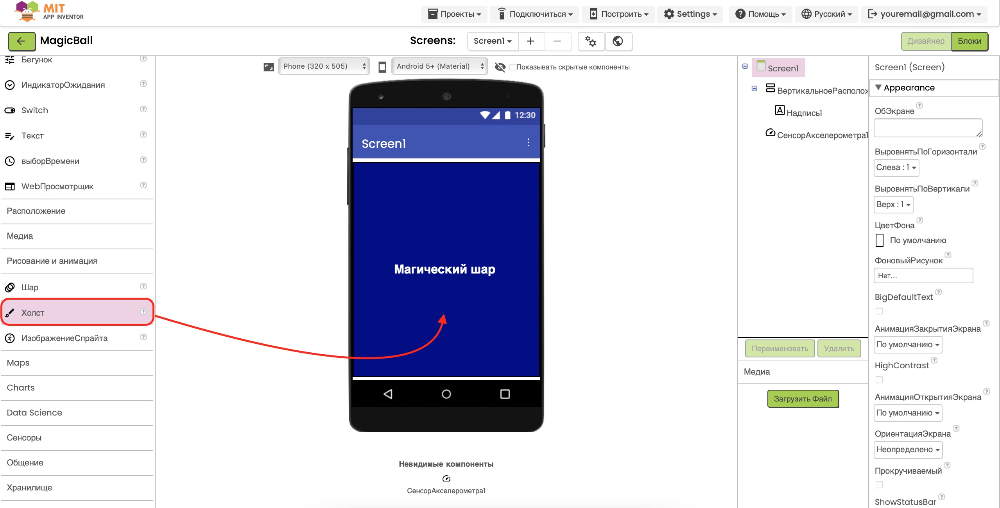
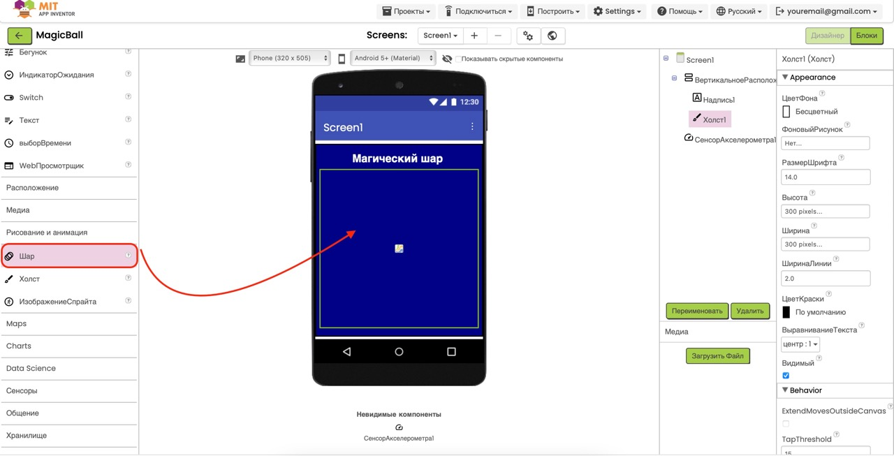

Проект "Магический шар"
Цель: Создать приложение-предсказатель, которое даёт случайные ответы на вопросы пользователя, когда он встряхивает телефон.
Этот проект научит тебя работать с датчиком движения (акселерометром), создавать списки данных и выбирать случайные элементы из списка.
Чему ты научишься:
- Распознавать встряхивание телефона
- Выбирать случайные ответы из списка
- Работать со списками данных
1
Подготовка проекта
2
Создание интерфейса
3
Добавление списка ответов
4
Программирование логики
5
Тестирование приложения
Шаг 1: Подготовка проекта
- Откройте MIT App Inventor в браузере и войдите в свой аккаунт.
- Создайте новый проект, нажав на кнопку "Start new project" (Начать новый проект) и назовите его "MagicBall".
- Теперь вы находитесь в редакторе "Designer" (Дизайнер), где будете создавать интерфейс приложения.
- Первым делом добавим датчик движения. В левой панели найдите раздел Sensors (Датчики) и перетащите компонент AccelerometerSensor (Акселерометр) на экран.
- Компонент появится в разделе "Non-visible components" (Невидимые компоненты) внизу экрана.
-
Выберите добавленный компонент AccelerometerSensor1 и настройте
его свойства в правой панели:
- Enabled (Включен): True (Да)
- MinimumInterval (Минимальный интервал): 400

Совет: Акселерометр позволяет вашему приложению
определять движения телефона, включая встряхивание. Параметр
чувствительности определяет, насколько сильным должно быть
встряхивание, чтобы приложение его заметило.
Шаг 2: Создание интерфейса
- Теперь создадим интерфейс нашего "Магического шара". В разделе Layout (Макет) перетащите компонент VerticalArrangement (Вертикальное расположение) на экран.
-
Настройте свойства VerticalArrangement1:
- Width (Ширина): Fill parent (Заполнить родителя)
- Height (Высота): Fill parent (Заполнить родителя)
- AlignHorizontal (Горизонтальное выравнивание): Center (По центру)
- AlignVertical (Вертикальное выравнивание): Center (По центру)
- BackgroundColor (Цвет фона): Темно-синий (например, #000080)
- Добавим заголовок. Из раздела User Interface (Интерфейс пользователя) перетащите компонент Label (Надпись) в VerticalArrangement1.
-
Настройте свойства Label1:
- Text (Текст): "Магический шар"
- TextColor (Цвет текста): White (Белый)
- FontSize (Размер шрифта): 24
- FontBold (Жирный шрифт): True (Да)
- Теперь добавим сам шар. Из раздела Drawing and Animation (Рисование и анимация) перетащите компонент Canvas (Холст) в VerticalArrangement1 под Label1. 
-
Настройте свойства Canvas1:
- Width (Ширина): 300 пикселей
- Height (Высота): 300 пикселей
- BackgroundColor (Цвет фона): None (Нет)
- Из раздела Drawing and Animation перетащите компонент Ball (Мяч) на Canvas1.
-
Настройте свойства Ball1:
- PaintColor (Цвет): Black (Чёрный)
- Radius (Радиус): 100
- X: 50 (центр холста по горизонтали)
- Y: 50 (центр холста по вертикали)

- Добавим место для отображения ответов. Из раздела User Interface перетащите компонент Label (Метка) на Canvas1.
-
Настройте свойства Label2:
- Text (Текст): "Задай вопрос и встряхни телефон"
- TextColor (Цвет текста): White (Белый)
- FontSize (Размер шрифта): 16
- Width (Ширина): 200
- TextAlignment (Выравнивание текста): Center (По центру)
Важно: Убедитесь, что Label2 (метка для ответа)
находится поверх Ball1 (шара). Для этого в панели компонентов
(Components) перетащите Label2 выше Ball1 в списке.
Шаг 3: Создание основной логики
- Перейдите во вкладку Blocks (Блоки), нажав на соответствующую кнопку в правом верхнем углу экрана.
- В левой панели найдите компонент СенсорАкселерометра1 (AccelerometerSensor1) и выберите блок когда СенсорАкселерометра1.Вибрация (when AccelerometerSensor1.Shaking).
- Перетащите этот блок в рабочую область. Этот блок активируется каждый раз, когда пользователь встряхивает телефон.
- В левой панели найдите компонент Надпись2 (Label2) и выберите блок присвоить Надпись2.Текст (set Label2.Text to).
- Перетащите блок присвоить Надпись2.Текст внутрь блока когда СенсорАкселерометра1.Вибрация.

Совет: Блок
когда СенсорАкселерометра1.Вибрация является
ключевым для функционирования магического шара - он обнаруживает,
когда пользователь встряхивает телефон, чтобы получить ответ.
Шаг 4: Добавление случайных ответов
- Теперь добавим блок для выбора случайного ответа. В левой панели найдите раздел Списки (Lists) и выберите блок выбрать случайный элемент список (pick a random item from list).
- Перетащите блок выбрать случайный элемент список в поле блока присвоить Надпись2.Текст.
- Теперь создадим список ответов прямо внутри блока случайного выбора. В левой панели найдите раздел Списки (Lists) и выберите блок создать список с (create list with).
- Перетащите блок создать список с в поле блока выбрать случайный элемент список.
- Нажмите на синий значок "+" в блоке создать список с, чтобы добавить поля для всех ответов. Вам нужно добавить 6 дополнительных полей (всего 7).
-
В поля блока создать список с добавьте
текстовые блоки со следующими ответами:
- "Да!"
- "Нет!"
- "Возможно..."
- "Не рассчитывай на это"
- "Спроси позже"
- "Однозначно!"
- "Вероятность невелика"
Важно: Убедитесь, что ваши блоки выглядят так же,
как на картинке выше. Обратите особое внимание на правильное
добавление всех ответов в список.
Шаг 5: Тестирование приложения
-
Протестируйте ваше приложение:
Чтобы увидеть ваше говорящее приложение в действии, воспользуйтесь руководством по тестированию приложений в нашем введении в MIT App Inventor. После запуска приложения введите любой текст и нажмите кнопку "Говорить"!

Поздравляем! Вы создали приложение "Магический
шар"! Теперь у вас есть цифровой советчик, который будет отвечать
на ваши вопросы простым встряхиванием телефона.
Идеи для улучшения:
- Добавьте звуковой эффект при появлении ответа
- Создайте анимацию для шара (например, вращение)
- Добавьте поле для ввода вопроса
- Создайте разные категории ответов (позитивные, негативные, нейтральные)
- Добавьте возможность сохранять историю вопросов и ответов
Скачать проект
Если у вас возникли сложности, вы можете скачать готовый файл проекта в нашем центре загрузок:
Перейти в центр загрузок